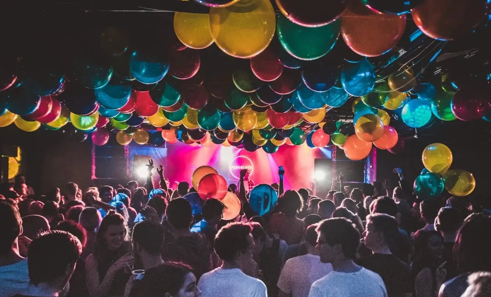
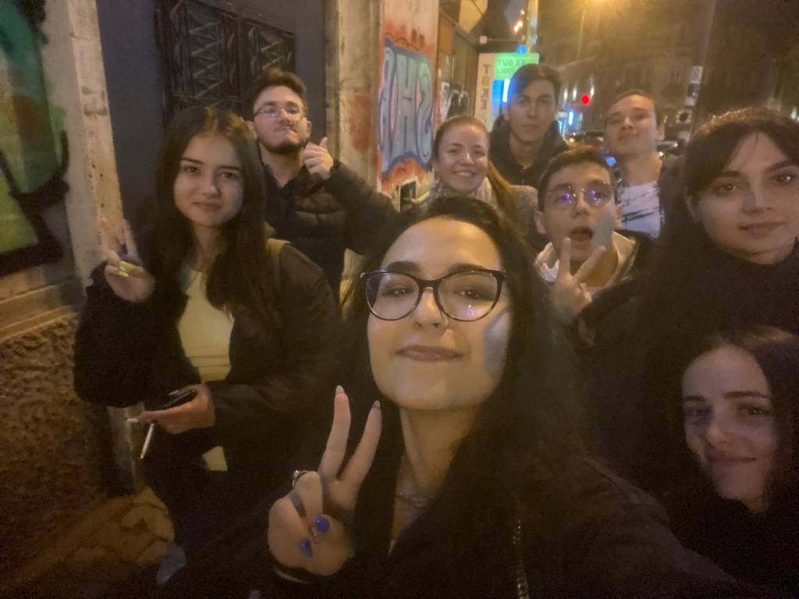
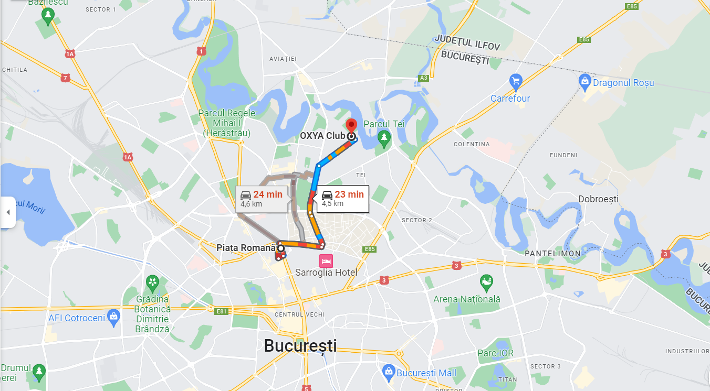

Vrei să petreci o noapte de neuitat?
Dacă răspunsul este DA, te așteptăm la "PARTY FOR LIFE" unde muzică și distracția vor fi date la maxim. Pe deasupra, câștigurile de pe urmă biletelor și a consumului vor fi virate în totalitate către cauza noastră: să aducem căldură sărbătorilor de iarnă copiilor de la secția de oncologie a Spitalului Fundeni.
Cauza

Cu ocazia sărbătorilor de iarnă, ne-am dorit să realizăm o fapta bună, prin intermediul căreia, să oferim bucurie copiilor de la secția de oncologie a Spitalului Fundeni. Te așteptăm să faci parte dintre cei care se vor adună să pună un zâmbet pe fetele celor mici.
Despre noi
UniSiSC este o organizație studențească, preocupată de crearea de oportunități, prin realizarea evenimentelor pe diverse tematici, de la workshop-uri IT, tutoriate pentru studenții aflați la ananghie în sesiune, până la petreceri.
Locație
Strada Caroteni 13, Bucuresti
